01
Capture
Simple guidance helps frame the entire memorial, keep text sharp, and include the surrounding context needed for a useful record.
Capture a memorial, preserve its inscription, map its location, and connect the relationships that turn names and dates into family history.
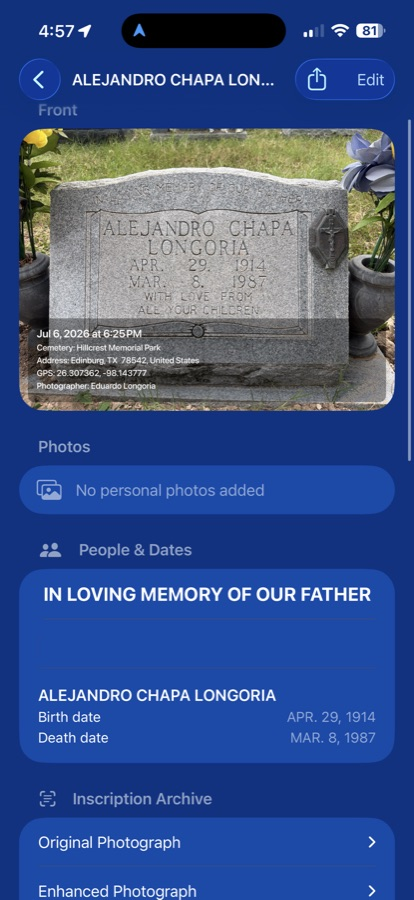
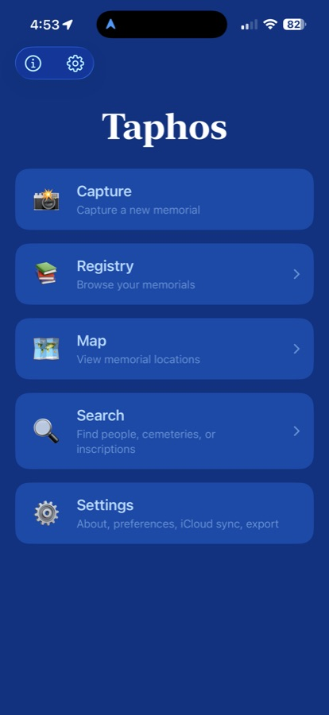
Weather fades lettering. Time scatters records. Family stories become fragments. Taphos brings the pieces back together in one carefully organized memorial archive.
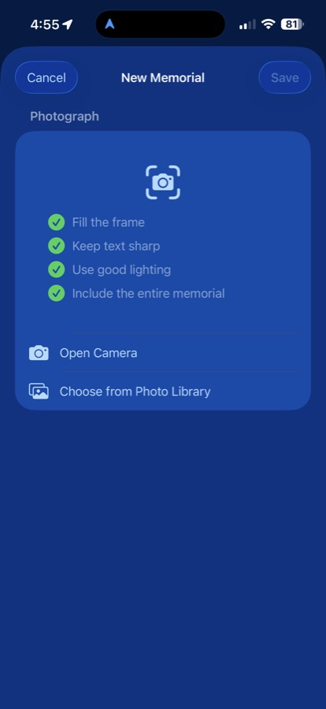
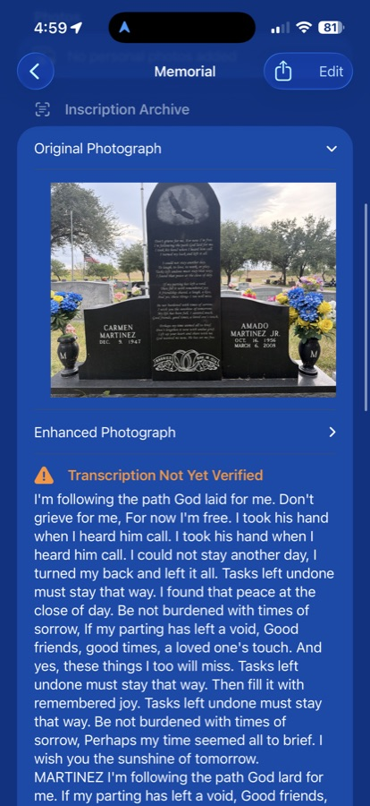
Taphos follows a clear path: capture the stone, recover the inscription, confirm the details, and place the person within a living family record.
Simple guidance helps frame the entire memorial, keep text sharp, and include the surrounding context needed for a useful record.
AI creates a transcription draft, but the final inscription remains clearly marked until a person reviews and verifies it.
Relationships, dates, notes, photographs, and genealogy branches transform a solitary record into connected history.
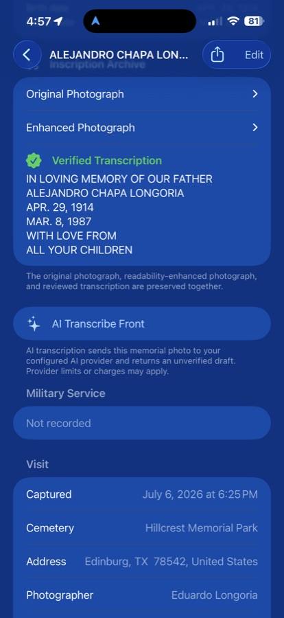
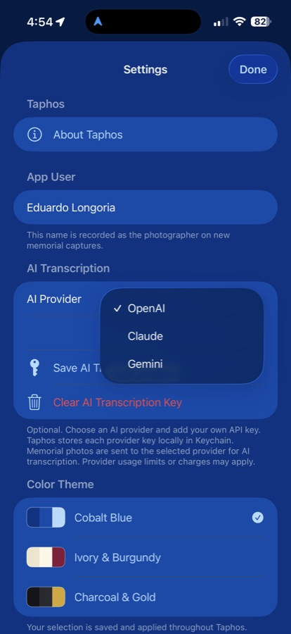
Traditional OCR can stumble over worn granite, shadows, decorative lettering, and fragmented dates. Taphos can send a memorial photograph to your selected AI provider and return an unverified draft for careful review.
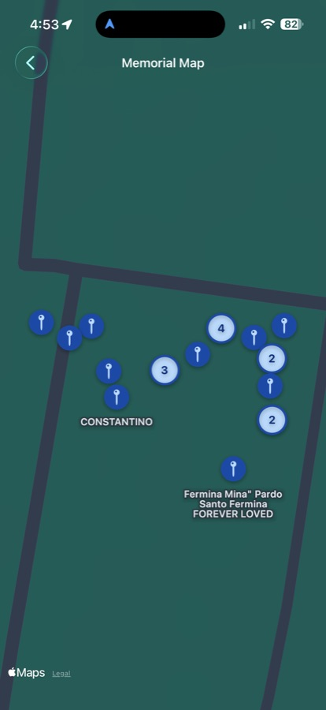
Memorial pins preserve where each person rests. Numbered clusters make family plots and nearby records easier to understand, while labels keep the cemetery landscape legible rather than turning it into a pin-shaped thunderstorm.
Search by person, cemetery, date, inscription, relationship, or note to move from a physical location to the record you need.
Capture, registry, map, search, genealogy, AI settings, export, and iCloud synchronization all share the same calm cobalt interface.
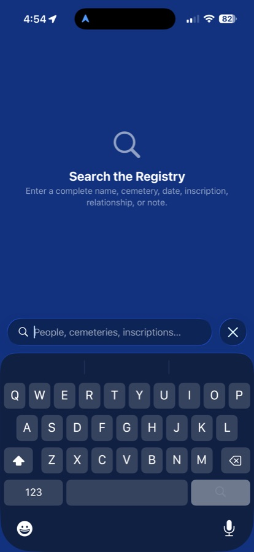
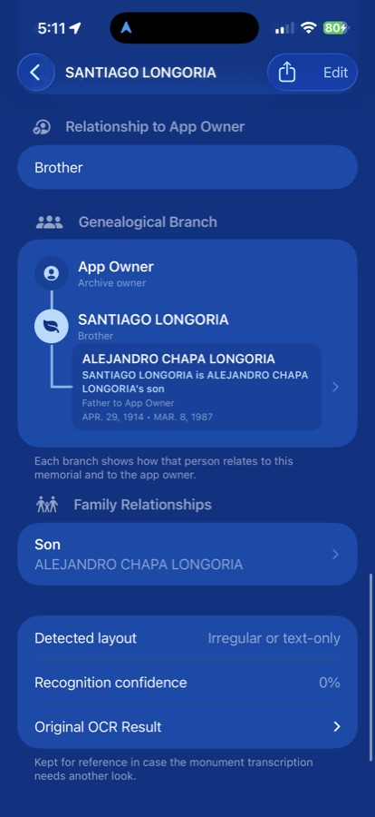
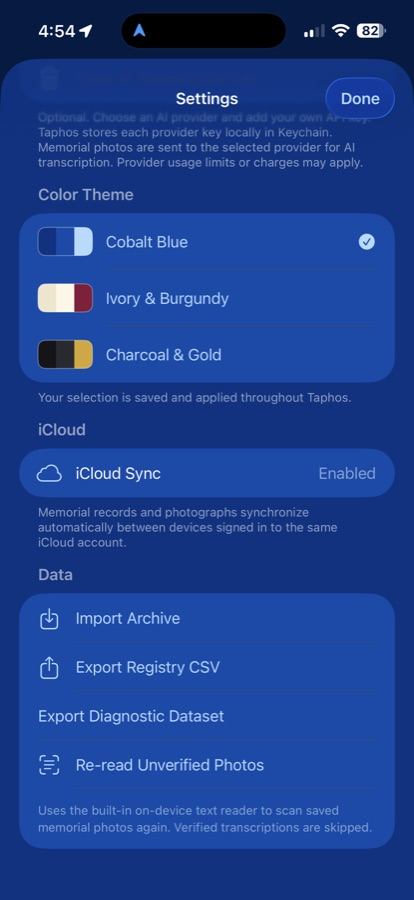
Memorial records and photographs can synchronize privately through the user’s own iCloud account. AI transcription is optional, provider choice remains visible, and export tools keep the archive portable.
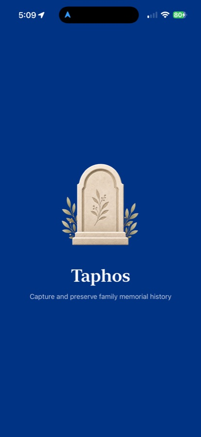
Taphos gives every memorial a place where the photograph, inscription, location, relationships, and memories can remain together.
Return to Taphos